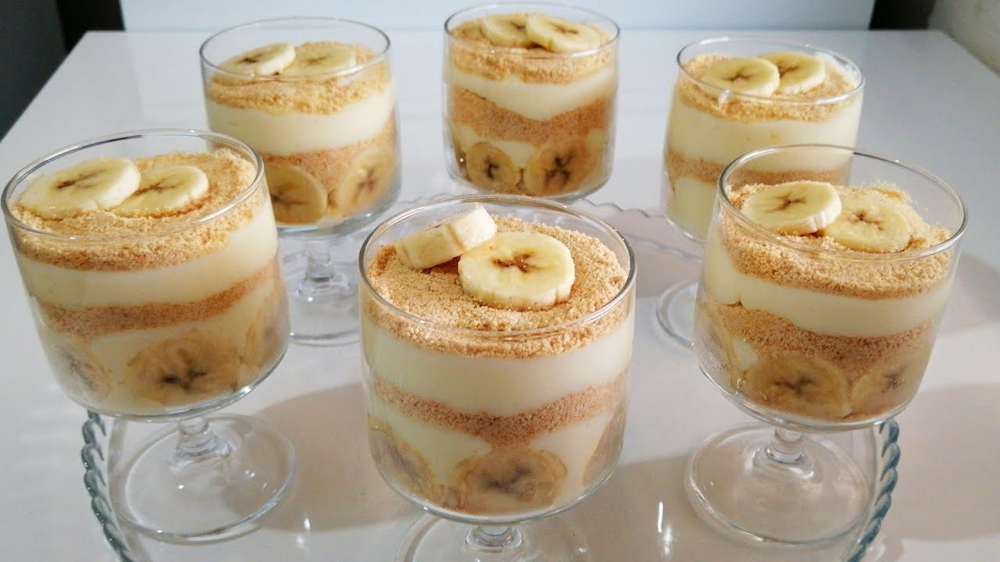

Muzlu Magnolia
Sütlü tatlı seviyorsanız, bu tatlıyı mutlaka denemelisiniz. Gerçekten çok lezzetli. Kreması tam kıvamında.
İçindeki yulaflı bisküvi ve meyvenin birleşimi çok uyumlu. Yapması oldukça pratik, 5 dakikanızı bile almaz. Soğumasını beklemek sabır işi sadece.

Tarif: Nefis Ev Yemekleri
Muzlu Magnolia Tarifi İçin Malzemeler
- 1 paket yulaflı bisküvi (saklıköy kullandım)
- 2 adet muz
Kreması İçin:
- 1 litre süt
- 3 yemek kaşığı nişasta
- 2 yemek kaşığı un
- 1 adet yumurta sarısı
- 1 yemek kaşığı tereyağı
- 1 paket vanilya
- 1 su bardağı toz şeker
Muzlu Magnolia Tarifi Nasıl Yapılır
- Öncelikle kremamızı hazırlayalım. Nişasta, un, şeker, yumurta sarısı ve sütü bir kaba alalım.
- Çırpma teli ile karıştıra karıştıra koyulaşıp kaynayıncaya kadar pişirelim.
- Göz göz olunca, ocağımızı kapatalım ve içine margarini ilave edelim.
- Vanilyayı da ekleyip, mikser ile 5 dakika kadar çırpalım. Bu işlem önemli, hem daha pürüzsüz bir kıvamda oluyor hem de un kokusu hiç kalmıyor.
- 1 paket bisküviyi robotta çekelim.
- Toz haline gelmeli. Muzu daire şeklinde dilimleyelim.
- Servis kaplarına 1’er kepçe kadar kremamızı alalım.
- Yanlarına muz parçalarını ekleyelim, ortasına da 1 yemek kaşığı kadar bisküviden ekleyelim.
- Sonra tekrar krema, muz dilimleri ve bisküvi.
- En son üzerine krema gelecek şekilde ayarlayın.
- Pratik tatlımız hazır, yaklaşık 2 saat kadar soğuttuktan sonra servis edebilirsiniz.
Afiyet olsun..